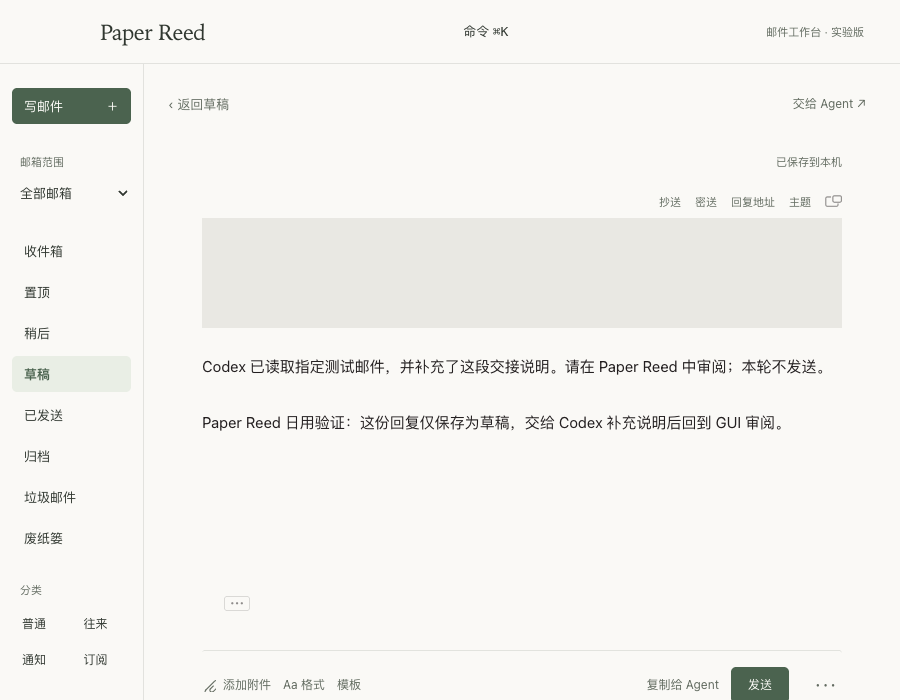

<!doctype html><html lang="zh-CN"><meta charset="utf-8"><style>body{margin:0;color:var(--foreground);font-family:var(--font-sans,system-ui)}figure{margin:0}img{width:100%;height:auto;display:block;border:1px solid var(--border);border-radius:var(--radius);box-sizing:border-box}figcaption{font-size:12px;color:var(--muted-foreground);margin-top:8px;line-height:1.6}</style><figure><figcaption>真实应用窗口 · 地址字段已遮挡 · 草稿未发送</figcaption></figure></html>